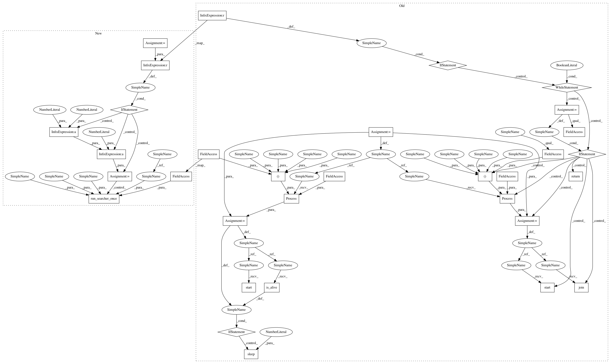

d56ae8d9f2af74d6dd6f9b7bf6f24915d7ca76ec,autokeras/classifier.py,ClassifierBase,fit,#ClassifierBase#Any#Any#Any#Any#Any#,126
Before Change
pickle.dump(self, open(os.path.join(self.path, "classifier"), "wb"))
pickle_to_file(self, os.path.join(self.path, "classifier"))
if time_limit is None:
while True:
searcher = self.load_searcher()
if len(searcher.history) >= constant.MAX_MODEL_NUM:
return
p = multiprocessing.Process(target=run_searcher_once, args=(x_train, y_train, x_test, y_test, self.path))
p.start()
p.join()
start_time = time.time()
while time.time() - start_time <= time_limit:
p = multiprocessing.Process(target=run_searcher_once, args=(x_train, y_train, x_test, y_test, self.path))
p.start()
// Kill the process if necessary.
while time.time() - start_time <= time_limit:
if p.is_alive():
time.sleep(1)
else:
break
else:
// If break above the code in this else won"t run
p.terminate()
p.join()
After Change
self.y_encoder = OneHotEncoder()
self.y_encoder.fit(y_train)
y_train = self.y_encoder.transform(y_train)
// Create the searcher and save on disk
if not self.searcher:
input_shape = x_train.shape[1:]
n_classes = self.y_encoder.n_classes
self.searcher_args["n_classes"] = n_classes
self.searcher_args["input_shape"] = input_shape
self.searcher_args["path"] = self.path
self.searcher_args["verbose"] = self.verbose
searcher = self._get_searcher_class()(**self.searcher_args)
self.save_searcher(searcher)
self.searcher = True
// Divide training data into training and testing data.
x_train, x_test, y_train, y_test = train_test_split(x_train, y_train, test_size=0.25, random_state=42)
pickle.dump(self, open(os.path.join(self.path, "classifier"), "wb"))
pickle_to_file(self, os.path.join(self.path, "classifier"))
if time_limit is None:
time_limit = 24*60*60
start_time = time.time()
while time.time() - start_time <= time_limit:
run_searcher_once(x_train, y_train, x_test, y_test, self.path)
def predict(self, x_test):
Return predict result for the testing data.
In pattern: SUPERPATTERN
Frequency: 4
Non-data size: 32
Instances
Project Name: jhfjhfj1/autokeras
Commit Name: d56ae8d9f2af74d6dd6f9b7bf6f24915d7ca76ec
Time: 2018-05-27
Author: jin@tamu.edu
File Name: autokeras/classifier.py
Class Name: ClassifierBase
Method Name: fit
Project Name: keras-team/autokeras
Commit Name: d56ae8d9f2af74d6dd6f9b7bf6f24915d7ca76ec
Time: 2018-05-27
Author: jin@tamu.edu
File Name: autokeras/classifier.py
Class Name: ClassifierBase
Method Name: fit
Project Name: jhfjhfj1/autokeras
Commit Name: 4b83c1070cebd0d996ba2cc69779dcb66d5d0032
Time: 2018-05-29
Author: jhfjhfj1@gmail.com
File Name: autokeras/classifier.py
Class Name: ClassifierBase
Method Name: fit